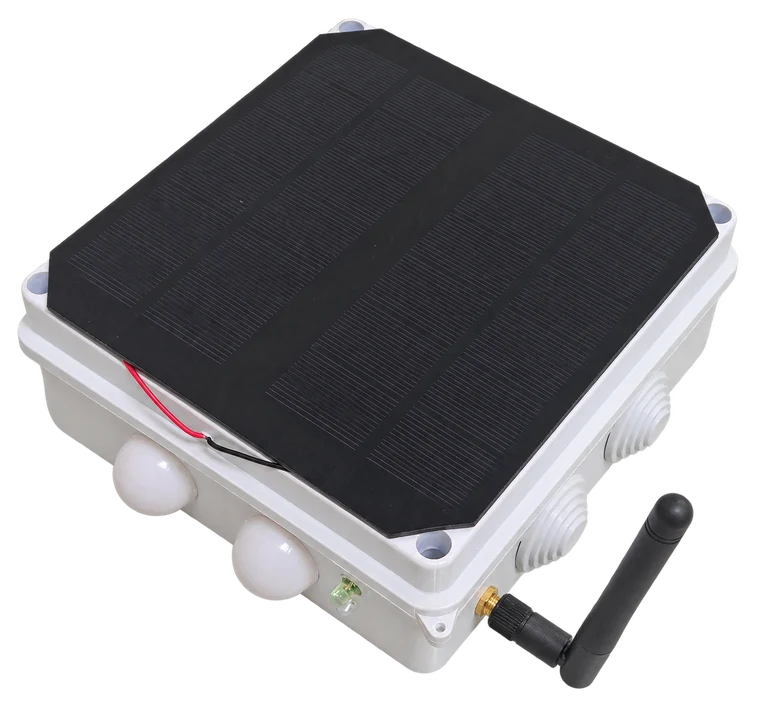
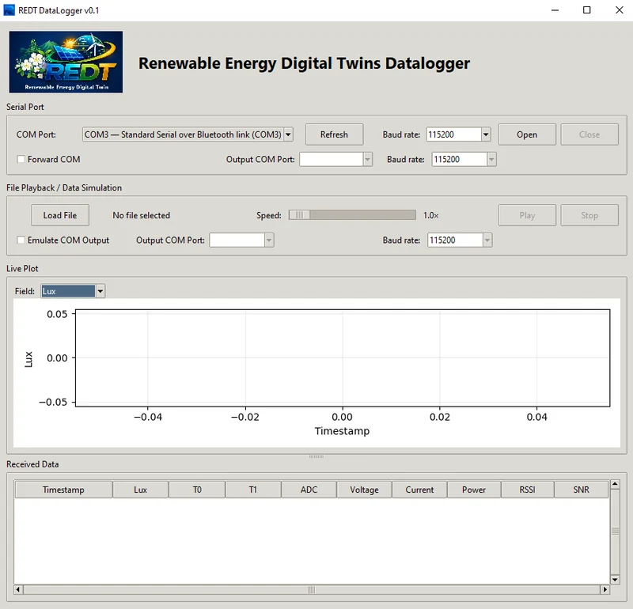
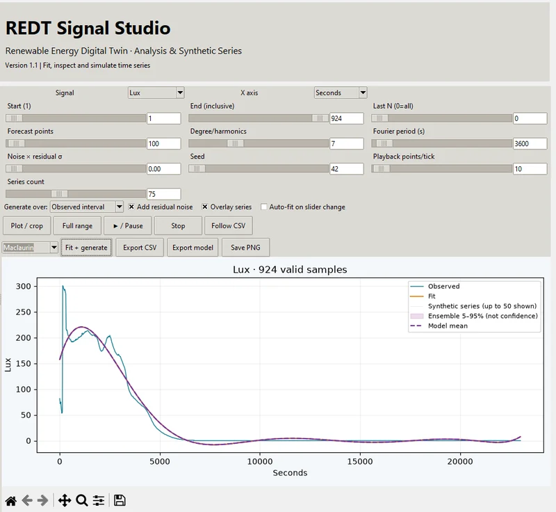
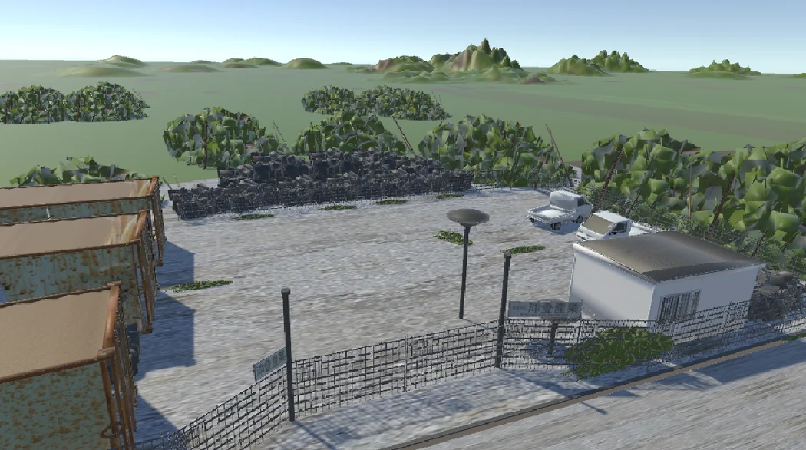

01Measure

Physical twin
The instrument measures light, temperature and electrical output, then sends readings to the local logger.
Sensor readings
Yamagata University (Asharif Laboratory)
Explore how sunlight, wind, and temperature differences can power distributed systems. REDT connects physical experiments with digital models so researchers can replay measurements and study operating conditions.

01 Research
Follow a measurement from the physical twin to the simulator, then compare the virtual response with the original readings.
01Measure

The instrument measures light, temperature and electrical output, then sends readings to the local logger.
Sensor readings
02Log

The logger runs on a local Windows server. It receives and records timestamped measurements as CSV and JSONL.
Local server · CSV / JSONL
03Model

Analyze the measured time series, fit a model and export observed or synthetic series for the simulator.
Analysis · scenario CSV
04Compare

Load a scenario in the simulator and compare the virtual response with the physical twin under matching conditions.
Measured ↔ simulated
Bring simulation results back to Signal Studio for comparison with the measured series. Differences help guide the next model or experiment.
02 Energy systems


SOLAR SIMULATOR AVAILABLE
Photovoltaic cells convert sunlight into electricity. In REDT, irradiance, shade and panel temperature can be compared with electrical behavior.
RESEARCH EXAMPLE
A panel array digital twin with adjustable clouds, tilt and series connections.
03 Simulator
AVAILABLE MODULE
Switch between the physical twin and a virtual solar field. Adjust the weather and the panel layout, inspect a single unit, and compare time-series plots.
Open REDT simulatorSmall wind turbine and Seebeck effect modules are planned.

The presentation proposes a snow-assisted thermoelectric charging station. A temperature difference can generate electricity through the Seebeck effect.